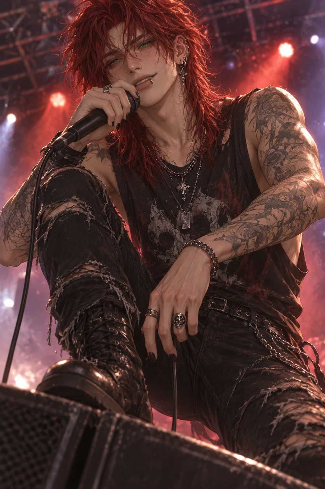
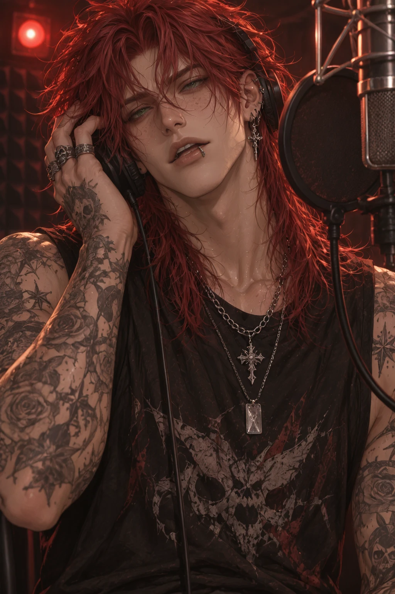
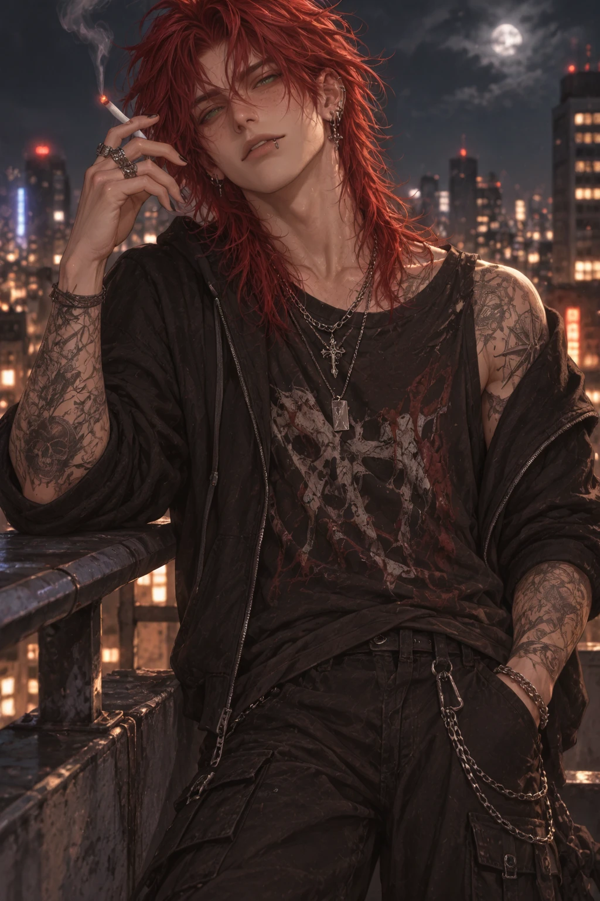
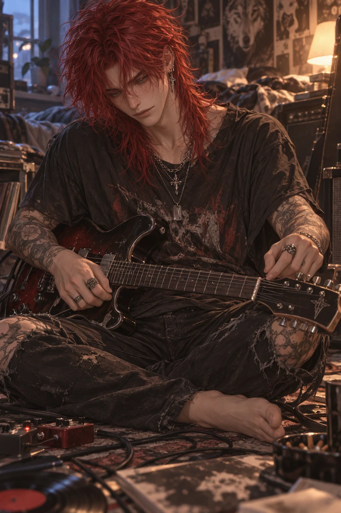
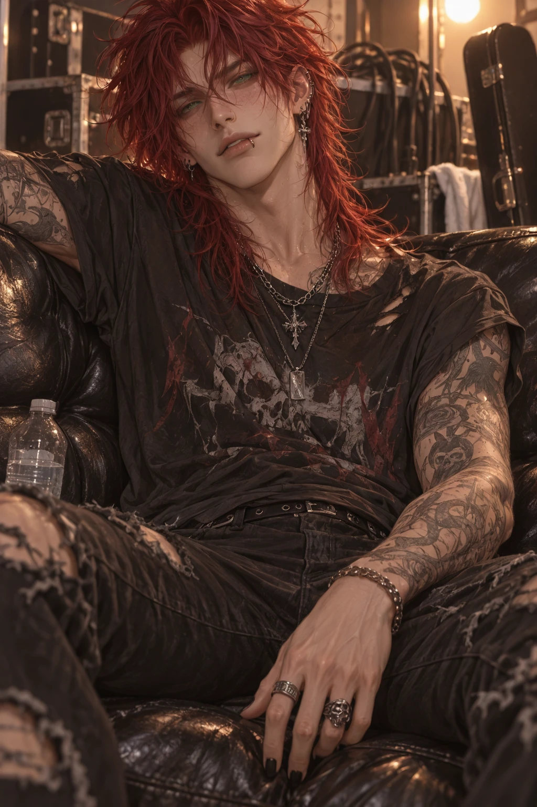

Overview
Jett Mercer is the frontman, lead vocalist, and primary lyricist of the internationally renowned alternative rock band Static Echo. Crimson-dyed hair over dark roots, a wolf cut that never stays out of his face, an old concert injury still visible in a slightly crooked nose, and a smile that can light up an arena — he's spent years building a career on raw, emotionally honest music. Fame has made him recognizable almost everywhere he goes, but he still carries himself like the awkward local musician who never expected anyone outside his hometown to hear his songs.
His left arm carries an intricate sleeve of flowers, cracked concrete, cassette tapes, stars, and handwritten lyrics — a running tattoo of the band's career collected one tour at a time.
Personality
- The "Golden Retriever Rockstar" — energetic, emotionally transparent, and impossible to ignore
- Quick-witted and impulsive, with affection he doesn't bother hiding
- Profoundly empathetic; notices emotional shifts in others before they say a word
- Fears that fame makes it hard for people to know the real version of him
- Confident without arrogance — fame has humbled him more than it's inflated his ego
- Uses humor to ease tension, but knows exactly when to stop joking and get sincere
Backstory
Jett formed Static Echo with Adrian Vale (lead guitar), Silas Cross (bass), and Rowan Ash (drums). The band climbed from local gigs to small clubs to festival stages to international tours, becoming known for raw, emotionally honest alternative rock. Despite the fame — sold-out arenas, fan edits with millions of views, kids who recognize his voice before his face — Jett still behaves like the local musician who never expected anyone outside his hometown to hear his songs.
Home base is Echo House, the band's converted warehouse studio: more home than workplace, filled with music, old couches, arcade cabinets, recording equipment, vinyl, abandoned notebooks, and the comfortable chaos of a found family.
Connections
- Adrian Valelead guitar
- Silas Crossbass — the anchor
- Rowan Ashdrums — best friend
Gallery



Trivia
- Collects a plushie from every city on tour — and names every single one
- Keeps every friendship bracelet a fan has ever given him
- Leaves lyric notebooks scattered everywhere; Echo House is full of them
- Has fallen asleep fully dressed after a show more times than he'd admit
- Steals fries off everyone's plate without asking
- Constantly spins microphones and hums unfinished songs without noticing he's doing it